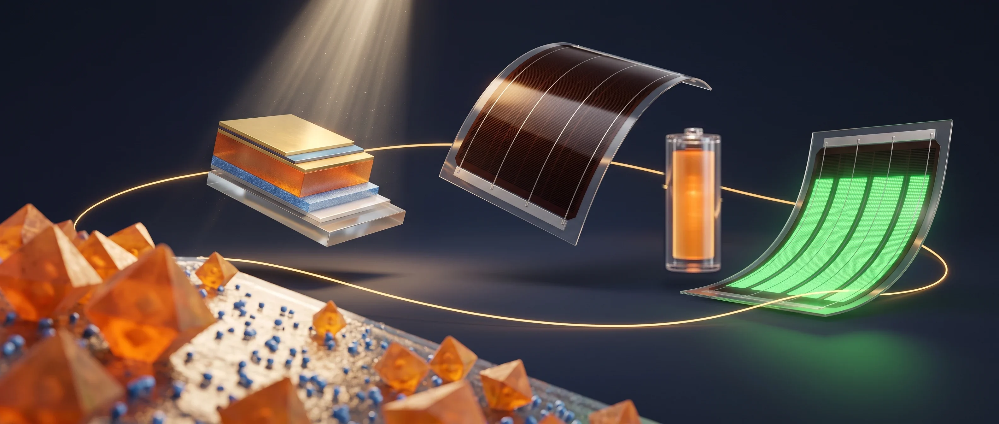
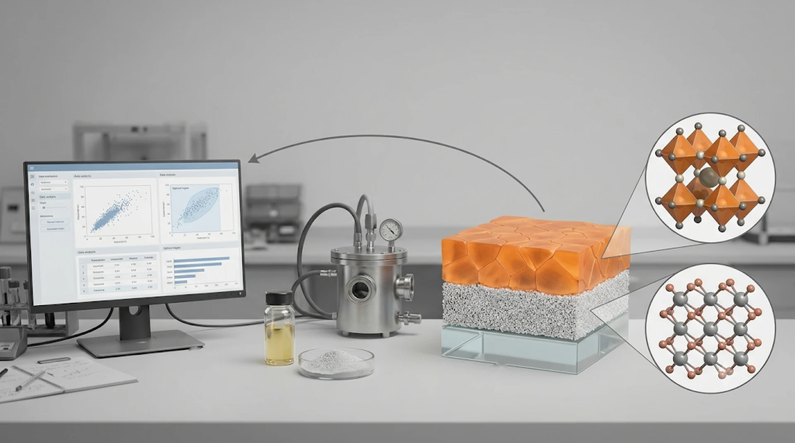
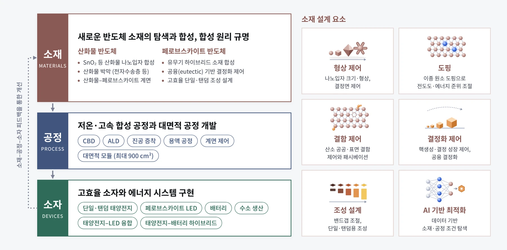
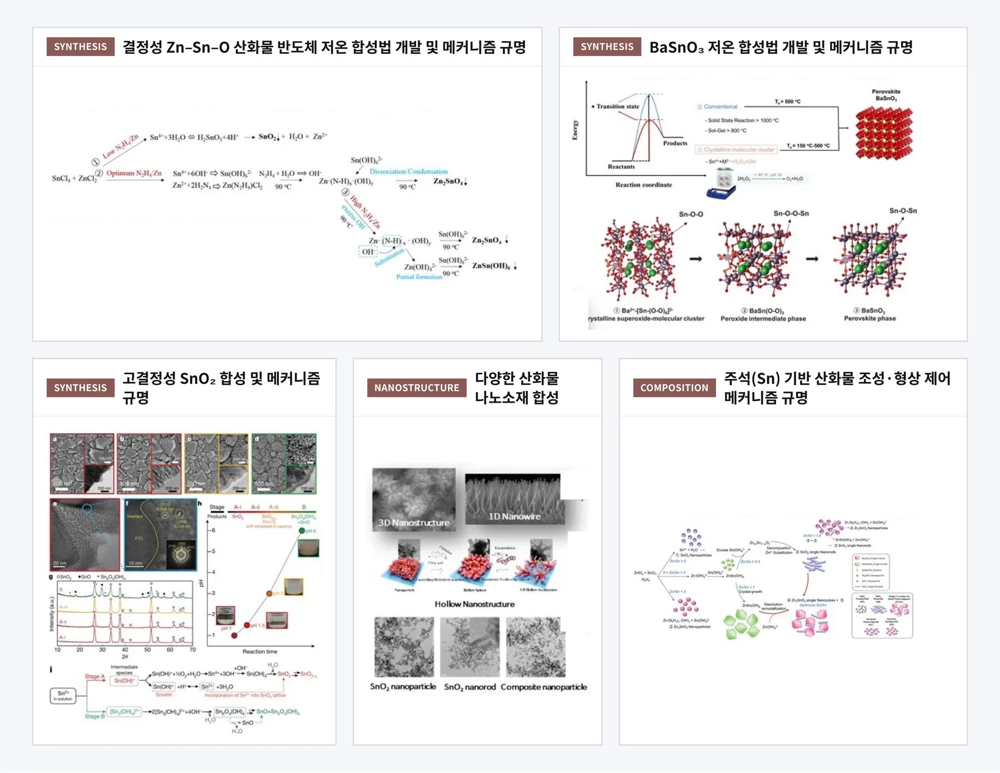
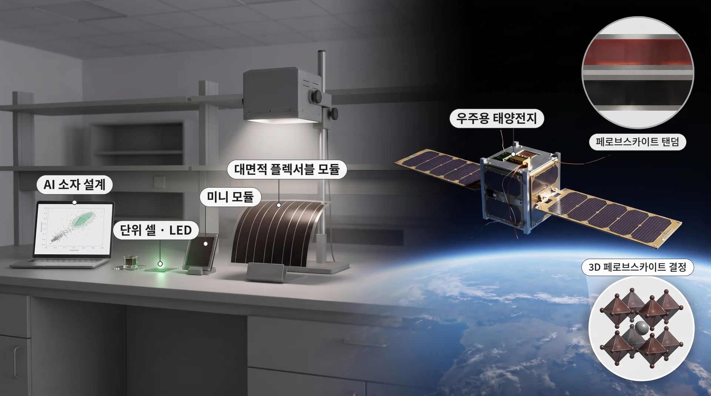
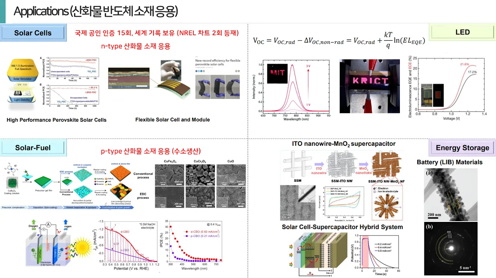
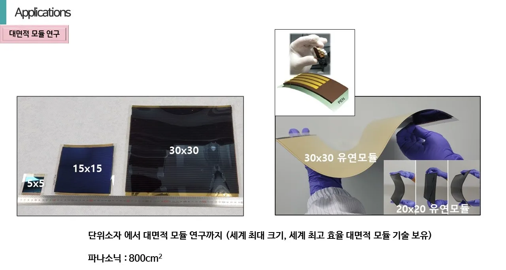
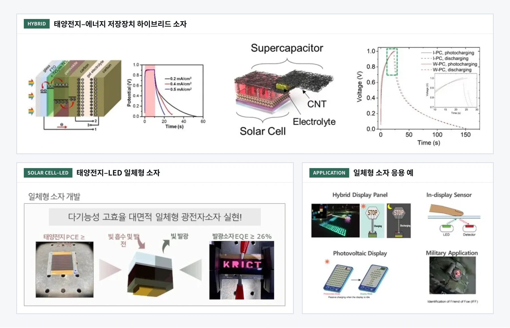
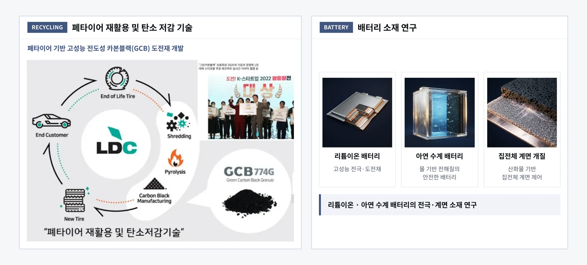

Research
Research
산화물 반도체와 페로브스카이트 반도체 소재의 합성 원리를 규명하고, 이를 고효율·대면적 태양전지, 발광다이오드, 배터리와 하이브리드 에너지 시스템으로 확장해 우주, 건물, 차량, 실내 IoT 등 다양한 분야로의 응용을 지향합니다.

1산화물 · 페로브스카이트 소재2태양전지 · 탠덤3대면적 플렉서블 모듈4에너지 저장 (배터리)5발광 (LED)- 산화물 · 페로브스카이트 소재
- 태양전지 · 탠덤
- 대면적 플렉서블 모듈
- 에너지 저장 (배터리)
- 발광 (LED)
01
Oxide & Hybrid Semiconductor Materials
산화물·하이브리드 반도체 소재
산화물 반도체와 페로브스카이트 반도체를 원자 수준에서 설계하고 합성해서, 고성능 에너지 소자의 기반 소재를 만듭니다.
- Oxide Nanoparticles
- Oxide Thin Films
- Hybrid Perovskite Materials
- Solution & Vacuum Processes
- Interface Engineering

- 소재 설계
AI로 논문·실험 데이터를 분석해 유망한 조성과 공정 조건을 고르고, 원하는 밴드갭과 에너지 준위에 맞춰 후보를 좁힙니다.
- 합성
용액 공정과 진공 증착으로 나노입자와 박막을 만듭니다. 실험 결과를 AI가 학습해 다음 합성 조건을 제안합니다.
- 결함·계면 제어
도핑과 표면 처리로 결함을 줄이고 계면을 맞춥니다. SEM, XRD, PL 데이터는 AI로 빠르게 정리합니다.
- 원리 규명
합성 메커니즘을 밝히고, 그 데이터를 다시 AI 설계에 넣어 설계, 합성, 분석이 하나의 순환으로 이어지게 합니다.


02
Perovskite Optoelectronics: Large-Area & Flexible
페로브스카이트 광전소자 (대면적·플렉서블·우주용)
페로브스카이트로 태양전지, 탠덤 태양전지, LED를 만들고, 대면적 플렉서블 모듈과 우주용 태양전지까지 확장합니다.
- Perovskite Solar Cells
- All-Perovskite Tandem Solar Cells
- Flexible Perovskite Solar Cells
- Large-Area (Flexible) Solar Modules
- Perovskite LEDs
- Solar Cell–LED
- Solar Cell–Battery
- Solar Cell–Supercapacitor
- Solar Cell–Water Splitting

- AI 소자 설계
층 구성, 두께, 에너지 준위 정렬과 공정 조건을 AI로 분석해 최적 조건을 찾습니다.
- 단위 셀 · LED
작은 셀에서 소재와 구조를 검증하고, 같은 소재로 전기를 빛으로 바꾸는 발광 소자도 만듭니다.
- 미니 모듈
셀을 직렬로 이어 모듈로 만들며 대면적화 기술을 확보합니다.
- 대면적 플렉서블 모듈
인쇄형 용액 공정으로 플렉서블 기판 위에 최대 900 cm²의 휘는 모듈을 만들고, 솔라 시뮬레이터로 성능을 측정합니다.
- 우주용 태양전지
가볍고 잘 휘는 페로브스카이트 전지를 위성처럼 무게가 중요한 우주 환경에 맞게 개발합니다.
- 페로브스카이트 탠덤
밴드갭이 다른 페로브스카이트 두 층을 쌓아, 한 소자로 더 넓은 파장의 빛을 전기로 바꿉니다.
- 3D 페로브스카이트 결정
꼭짓점을 공유하는 팔면체가 3차원으로 이어진 결정 구조입니다.



03
Sustainable Battery Materials
지속가능 배터리 소재
폐타이어에서 되살린 탄소로 배터리 소재를 만들고, 리튬이온 전지와 차세대 아연 수계 전지, 태양전지와 연계한 에너지 자립형 소자로 이어갑니다.
- Li-ion Batteries
- Aqueous Zinc Batteries
- Conductive Carbon Black from Waste Tires
- Solar Cell–Battery Hybrids

- 폐타이어 재활용
버려지는 폐타이어를 배터리 소재의 원료로 씁니다.
- 열분해로 탄소 회수
폐타이어를 열분해해 탄소를 회수하고 정제합니다. 공정 조건과 탄소 특성의 관계는 AI로 분석합니다.
- 재생 탄소 도전재
회수한 탄소를 전극용 도전재로 만듭니다.
- 전극 제작
재생 탄소를 금속 포일 위에 코팅해 전극을 만듭니다.
- 리튬이온 배터리
재생 탄소 전극을 리튬이온 전지에 적용합니다.
- 아연 수계 배터리
물 기반 전해질을 쓰는 안전하고 값싼 차세대 아연 전지를 개발합니다.
- AI 수명 예측
충방전 데이터를 AI가 학습해 수명을 예측하고 열화 원인을 찾아, 그 결과를 소재 공정에 다시 반영합니다.
- 태양전지-배터리 연계
페로브스카이트 태양전지와 배터리를 묶어, 빛으로 충전하고 저장하는 에너지 자립형 소자를 만듭니다.
- 흑연층 탄소 입자
동심원 흑연층으로 이루어진 탄소 입자가 사슬처럼 이어진 구조입니다.
- 전극 속 탄소 네트워크
탄소 입자가 활물질 입자 사이를 그물처럼 이어 전자가 잘 흐르게 합니다.
